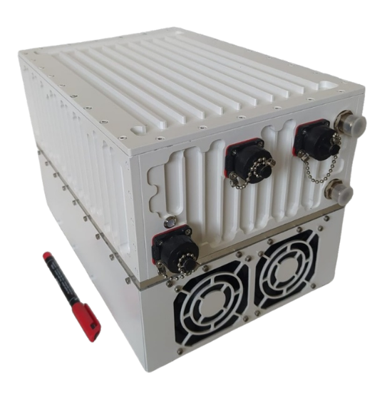
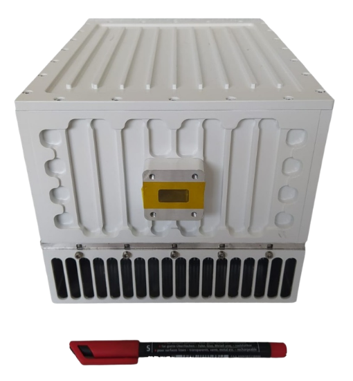
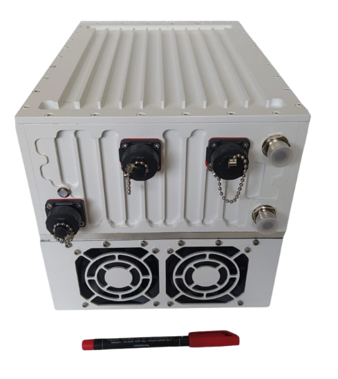

100W L-To Ku-Band Block Up Converter, GaN teknolojisi tabanlıdır. Yüksek verimli GaN solid-state tasarımı, uydu uplink uygulamalarında en yüksek performansı sunar.
GANSAT-100WKU
| RF Frekans | 13.75 – 14.50 GHz |
| Yerel Osilatör | 12.80 GHz |
| Çıkış Gücü | 100W (+50 dBm) |
| IF Konnektör | N-type or F-type |
| Güç Kaynağı | 220V 50Hz AC, 500W typ. |
| Çıkış Arayüzü | WR-75 G |
| Kazanç | 68 dB min, 73 dB nominal |
| IMD3 (Two Tones) | -26 dBc max. 2 signals 5 MHz apart at P-LINEAR |
| L.O. Leakage | -45 dBm max |
| Spurious | -50 dBc max |
| Spektral Büyüme | -30 dBc (QPSK at 1.5x and OQPSK at 1.0x symbol rate offset with 2dB back-off) |
| Dış Referans Gereksinimi | Via IF cable — 10 MHz (sine-wave), -5 to +5 dBm @ input port |
| TX Kazanç Varyasyonu / Sıcaklık Kararlılığı | ± 0.5 dB over 40 MHz / ± 1.8 dB over full band / ± 1.5 dB typ., ± 1.8 dB max. |
| Faz Gürültüsü | -55 dBc/Hz @ 10 Hz · -65 @ 100 Hz · -75 @ 1 kHz · -85 @ 10 kHz · -95 @ 100 kHz · -115 @ 1 MHz |
| Gürültü Güç Yoğunluğu TX / RX | -80 dBm/Hz (max) / -125 dBm/Hz (max) |
| Gürültü Figürü | 15 dB max |
| Input / Output V.S.W.R. | 2:1 max |
| Mute | L.O. kilitsizse SSPA'yı kapatır |
| Çalışma / Depolama Sıcaklığı | -40°C to +55°C / -55°C to +85°C |
| Boyutlar | 310 (L) × 240 (W) × 210 (H) mm — 12.2" × 9.45" × 8.25" |
| Ağırlık | 12.75 kg (28.1 lbs) max |
GANSAT-100WEXTKU
| RF Frekans | 13.75 – 14.75 GHz |
| Yerel Osilatör | 12.80 GHz |
| Çıkış Gücü | 100W (+50 dBm) |
| IF Konnektör | N-type or F-type |
| Güç Kaynağı | 220V 50Hz AC, 500W typ. |
| Çıkış Arayüzü | WR-75 G |
| Kazanç | 68 dB min, 73 dB nominal |
| IMD3 (Two Tones) | -26 dBc max. 2 signals 5 MHz apart at P-LINEAR |
| L.O. Leakage | -45 dBm max |
| Spurious | -50 dBc max |
| Spektral Büyüme | -30 dBc (QPSK at 1.5x and OQPSK at 1.0x symbol rate offset with 2dB back-off) |
| Dış Referans Gereksinimi | Via IF cable — 10 MHz (sine-wave), -5 to +5 dBm @ input port |
| TX Kazanç Varyasyonu / Sıcaklık Kararlılığı | ± 0.5 dB over 40 MHz / ± 1.8 dB over full band / ± 1.5 dB typ., ± 1.8 dB max. |
| Faz Gürültüsü | -55 dBc/Hz @ 10 Hz · -65 @ 100 Hz · -75 @ 1 kHz · -85 @ 10 kHz · -95 @ 100 kHz · -115 @ 1 MHz |
| Gürültü Güç Yoğunluğu TX / RX | -80 dBm/Hz (max) / -125 dBm/Hz (max) |
| Gürültü Figürü | 15 dB max |
| Input / Output V.S.W.R. | 2:1 max |
| Mute | L.O. kilitsizse SSPA'yı kapatır |
| Çalışma / Depolama Sıcaklığı | -40°C to +55°C / -55°C to +85°C |
| Boyutlar | 310 (L) × 240 (W) × 210 (H) mm — 12.2" × 9.45" × 8.25" |
| Ağırlık | 12.75 kg (28.1 lbs) max |
GANSAT-100WKU, Türkiye'nin yerli SSPA üreticisi Gansat Teknoloji tarafından geliştirilen 100W çıkış güçlü Ku-Band Block Up Converter'dır. GaN (Gallium Nitride) teknolojisi tabanlı solid-state tasarımı sayesinde geleneksel TWTA çözümlerine kıyasla daha düşük güç tüketimi, daha uzun ürün ömrü ve daha yüksek güvenilirlik sunar.
13.75–14.75 GHz frekans aralığında çalışan bu ürün; VSAT ağları, broadcast uplink bağlantıları, kurumsal uydu interneti ve mobil uydu haberleşme sistemlerinde kullanım için tasarlanmıştır. Intelsat IESS308/309 faz gürültüsü gereksinimlerini aşmakta ve yalnızca sivil kullanıma yönelik olarak RoHS uyumlu üretilmektedir.
VSAT ağları, broadcast katkı linkleri, kurumsal uydu internet altyapısı ve mobil uydu haberleşme sistemlerinde kullanılır. L-band IF sinyalini Ku-band RF frekansına dönüştürerek jeostasyoner uyduya iletim sağlar.
SSPA (Solid State Power Amplifier) solid-state transistörlerle RF sinyali yükseltir; BUC (Block Up Converter) ise frekans dönüştürme ve yükseltmeyi bir arada gerçekleştiren tam bir uplink ünitesidir. Modern GaN tabanlı BUC'lar SSPA aşamasını entegre ettiğinden bu iki terim ticari Ku-band sistemlerde çoğunlukla birbirinin yerine kullanılmaktadır.
GaN SSPA'lar; daha düşük güç tüketimi, vakum tüpü olmadığından daha uzun ömür, yüksek gerilim gerektirmemesi, modern dalga biçimleri için daha iyi doğrusallık ve daha düşük bakım maliyeti sunar. 400W'a kadar çıkış güçlerinde GaN, ticari uydu yer istasyonlarında tercih edilen teknoloji haline gelmiştir.
Standart KU (GANSAT-100WKU) 13.75–14.50 GHz aralığını kapsar. Genişletilmiş KU (GANSAT-100WEXTKU) ise 13.75–14.75 GHz aralığını kapsayarak genişletilmiş Ku-band uplink spektrumuna erişim gerektiren uygulamalar için 250 MHz ek bant genişliği sağlar.